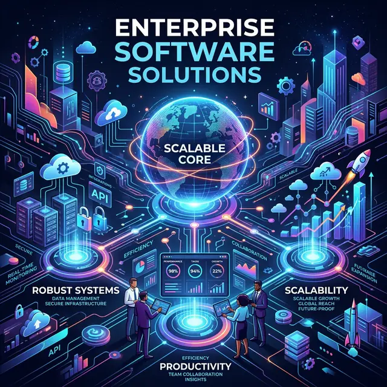
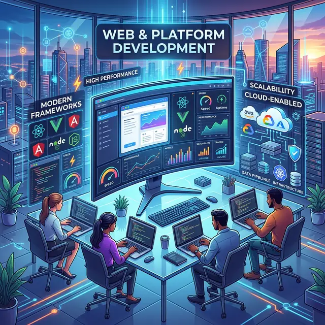

Enterprise Software Solutions
We design and develop robust enterprise-grade applications that streamline operations, enhance productivity, and integrate seamlessly with existing business ecosystems. Our solutions are built for scalability, reliability, and long-term performance.

Custom Software Development
Our team delivers tailor-made software solutions aligned with unique business objectives. From concept to deployment, we ensure the software architecture is efficient, flexible, and future-ready.
Web & Platform Development
We build high-performance web platforms and cloud-enabled applications using modern frameworks and technologies, ensuring seamless performance, security, and scalability.

Mobile Application Development
Our experts develop powerful mobile applications for Android and iOS, designed to deliver exceptional user experiences while maintaining high levels of performance and security.
Banking & Fintech Solutions
With deep expertise in banking and financial technology, we build secure digital platforms including payment systems, financial management platforms, digital banking interfaces, and fintech integrations that meet modern regulatory and performance standards.
Empowering Your Business with Innovative, Tailored Technology Solutions
Core Industry Focus
Our expertise is particularly strong in the following domains
Banking & Financial Services
Fintech Platforms
Enterprise Business Solutions
Secure Digital Infrastructure
Core Development Services
Custom Software Development
Tailored solutions designed to meet your specific business requirements with precision and scalability.
Web & Mobile Development
Cutting-edge web and native mobile applications that deliver exceptional user experiences across all devices.
Enterprise Solutions
Comprehensive systems designed to streamline large-scale operations and drive organizational efficiency.
API & System Integration
Seamlessly connecting disparate systems and data sources to ensure a unified and efficient workflow.
Domain Expertise
Banking & Financial Services
Deep domain knowledge in banking operations, compliance, and financial technology integration.
Fintech Platforms
Building secure and scalable platforms for modern digital payments and financial management.
Secure Digital Infrastructure
Implementing rock-solid security protocols and resilient digital frameworks for modern enterprises.
Advanced Technology Services
Artificial Intelligence (AI)
Leveraging machine learning and cognitive computing to automate processes and derive actionable insights.
Automation Solutions
Robotic Process Automation and intelligent workflows to eliminate manual tasks and boost productivity.
IoT Solutions
Connecting physical assets with digital intelligence for real-time monitoring and advanced data analytics.
VAPT (Cybersecurity Testing)
Comprehensive vulnerability assessments and penetration testing to ensure your systems remain unbreachable.
Data Engineering & Analytics
Raw data transformed into powerful intelligence through expert data pipelining and visualization.